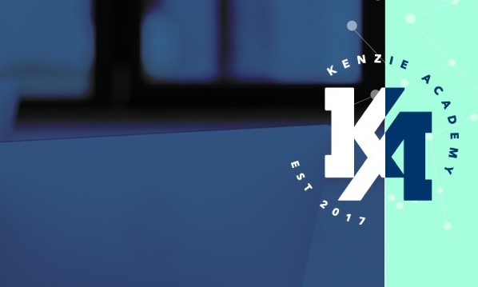

My Ideal Job
A job that has a great balance between work and home. Working remotely is plus, but not required. Also pays extremely well to where I alone can support my family and live enjoying what I want.
I am a Software engineering Student here at Kenzie Academy!
A job that has a great balance between work and home. Working remotely is plus, but not required. Also pays extremely well to where I alone can support my family and live enjoying what I want.
Creating a platform that allows the creation of imaginary worlds for creators to have full control of options for those that will interact with their fantastical campaigns.
I started in traditional art in 2008, which eventually evolved to digital over the years. Went to and graduated college learning Video Production in 2012. Then self taught video game production, software development, and writing following college up to 2023 where I am finishing up Certified Programs in said fields.